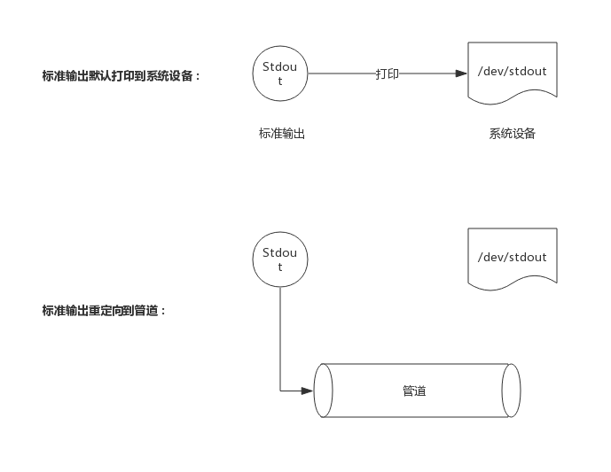

简介
示例测试相对于单元测试和性能测试来说，其实现机制比较简单。它没有复杂的数据结构，也不需要额外的流程控制，其核心工作原理在于收集测试过程中的打印日志，然后与期望字符串做比较，最后得出是否一致的报告。
数据结构
每个测试经过编译后都有一个数据结构来承载，这个数据结构即InternalExample:
type InternalExample struct {
Name string // 测试名称
F func() // 测试函数
Output string // 期望字符串
Unordered bool // 输出是否是无序的
}
比如，示例测试如下：
// 检测乱序输出
func ExamplePrintNames() {
gotest.PrintNames()
// Unordered output:
// Jim
// Bob
// Tom
// Sue
}
该示例测试经过编译后，产生的数据结构成员如下：
- InternalExample.Name = "ExamplePrintNames";
- InternalExample.F = ExamplePrintNames()
- InternalExample.Output = "Jim\n Bob\n Tom\n Sue\n"
- InternalExample.Unordered = true;
其中Output是包含换行符的字符串。
捕获标准输出
在示例测试开始前，需要先把标准输出捕获，以便获取测试执行过程中的打印日志。
捕获标准输出方法是新建一个管道，将标准输出重定向到管道的入口(写口)，这样所有打印到屏幕的日志都会输入到管道中，如下图所示：

测试开始前捕获，测试结束恢复标准输出，这样测试过程中的日志就可以从管理中读取了。
测试结果比较
测试执行过程的输出内容最终也会保存到一个string类型变量里，该变量会与InternalExample.Output进行比较，二者一致即代表测试通过，否则测试失败。
输出有序的情况下，比较很简单只是比较两个String内容是否一致即可。无序的情况下则需要把两个String变量排序后再进行对比。
比如，期望字符串为："Jim\n Bob\n Tom\n Sue\n"，排序后则变为："Bob\n Jim\n Sue\n Tom\n"
测试执行
一个完整的测试，过程将分为如下步骤：
- 捕获标准输出
- 执行测试
- 恢复标准输出
- 比较结果
下面，由于源码非常简单，下面直接给出源码：
func runExample(eg InternalExample) (ok bool) {
if *chatty {
fmt.Printf("=== RUN %s\n", eg.Name)
}
// Capture stdout.
stdout := os.Stdout // 备份标输出文件
r, w, err := os.Pipe() // 创建一个管道
if err != nil {
fmt.Fprintln(os.Stderr, err)
os.Exit(1)
}
os.Stdout = w // 标准输出文件暂时修改为管道的入口，即所有的标准输出实际上都会进入管道
outC := make(chan string)
go func() {
var buf strings.Builder
_, err := io.Copy(&buf, r) // 从管道中读出数据
r.Close()
if err != nil {
fmt.Fprintf(os.Stderr, "testing: copying pipe: %v\n", err)
os.Exit(1)
}
outC <- buf.String() // 管道中读出的数据写入channel中
}()
start := time.Now()
ok = true
// Clean up in a deferred call so we can recover if the example panics.
defer func() {
dstr := fmtDuration(time.Since(start)) // 计时结束，记录测试用时
// Close pipe, restore stdout, get output.
w.Close() // 关闭管道
os.Stdout = stdout // 恢复原标准输出
out := <-outC // 从channel中取出数据
var fail string
err := recover()
got := strings.TrimSpace(out) // 实际得到的打印字符串
want := strings.TrimSpace(eg.Output) // 期望的字符串
if eg.Unordered { // 如果输出是无序的，则把输出字符串和期望字符串排序后比较
if sortLines(got) != sortLines(want) && err == nil {
fail = fmt.Sprintf("got:\n%s\nwant (unordered):\n%s\n", out, eg.Output)
}
} else { // 如果输出是有序的，则直接比较输出字符串和期望字符串
if got != want && err == nil {
fail = fmt.Sprintf("got:\n%s\nwant:\n%s\n", got, want)
}
}
if fail != "" || err != nil {
fmt.Printf("--- FAIL: %s (%s)\n%s", eg.Name, dstr, fail)
ok = false
} else if *chatty {
fmt.Printf("--- PASS: %s (%s)\n", eg.Name, dstr)
}
if err != nil {
panic(err)
}
}()
// Run example.
eg.F()
return
}
示例测试执行时，捕获标准输出后，马上启动一个协程阻塞在管道处读取数据，一直阻塞到管道关闭，管道关闭也即读取结束，然后把日志通过channel发送到主协程中。
主协程直接执行示例测试，而在defer中去执行关闭管道、接收日志、判断结果等操作。